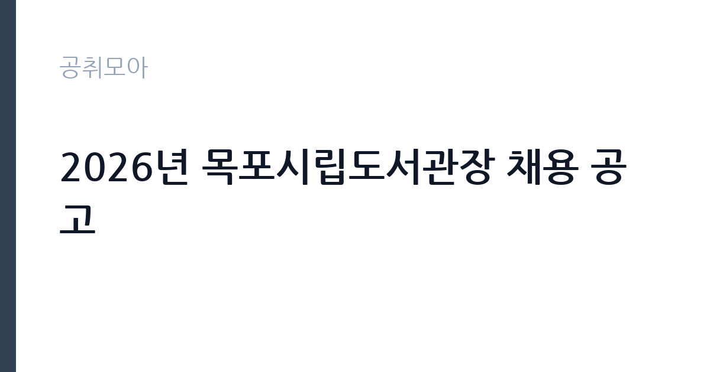

[공공기관] 2026년 목포시립도서관장 채용 공고
(재)목포문화재단 · 전남 · 마감 2026-10-07 (D-15) · 출처 나라일터

한눈에 보는 모집 조건
| 기관 | (재)목포문화재단 |
|---|---|
| 공고명 | 2026년 목포시립도서관장 채용 공고 |
| 고용형태 | 임원 |
| 근무지 | 전남 |
| 게시일 | 2026-09-22 |
| 마감일 | 2026-10-07 (D-15) |
지원자격, 이렇게 읽으세요
- 도서관장 1명
- 접수 ~2026-10-07 마감
- 세부 조건은 원문 공고문 확인
도서관장 채용의 자격요건은 사서 자격과 도서관·문화예술 분야의 관리 경력을 중심으로 정해지는 것이 일반적입니다. 세부 자격과 제출서류는 목포문화재단과 목포시 고시·공고의 원문에서 확인하셔야 합니다. 기관장급 선임이므로 직무수행계획서와 경영 비전이 핵심 평가 자료가 될 수 있습니다. 결격사유와 임기 조건도 원문에서 함께 살펴보시기 바랍니다.
이 공고의 포인트
첫 번째 포인트는 시립도서관의 기관장을 맡는 자리라는 점입니다. 도서관 정책과 조직 운영의 전권을 가지고 경영 철학을 실현할 수 있습니다. 두 번째로 목포문화재단 소속으로 도서관과 문화예술 사업의 연계를 추진할 수 있습니다. 세 번째로 관장급 공개채용은 자주 나오지 않는 기회라, 관련 경력을 갖춘 분에게는 드문 도전 무대입니다. 전남 지역 문화 발전에 기여하고 싶은 분께 적합합니다.
전형은 어떻게 진행되나
전형은 서류심사와 면접심사로 진행되는 것이 일반적이며, 세부 일정은 원문 공고에서 확인하시기 바랍니다. 기관장 선임이므로 임원추천위원회 등의 심의 절차를 거칠 수 있습니다. 직무수행계획서와 경영 비전의 완성도가 당락을 좌우하므로 충분한 시간을 들여 준비하시기 바랍니다. 접수 방법과 마감 시각을 원문에서 반드시 확인하시기 바랍니다.
이런 분께 추천해요
- 공공도서관과 문화예술 기관의 관리 경력이 있으신 분
- 목포 지역 독서문화 발전에 기여하고 싶으신 분
- 도서관 경영 비전을 실현할 기관장급 도전을 준비하시는 분
지원 전 체크리스트
- 도서관장 자격요건(사서 자격·관리 경력)을 원문에서 확인했습니다
- 직무수행계획서와 경영 비전을 준비했습니다
- 임기와 보수 조건을 원문에서 확인했습니다
- 접수방법과 마감일 10월 7일을 확인했습니다
모집 일정과 제출 타이밍
마감일은 2026년 10월 7일입니다. 접수 기간이 약 2주로, 직무수행계획서를 준비할 시간을 고려하면 서둘러 시작하시기 바랍니다. 서류심사와 면접, 선임 절차를 거쳐 임용까지 수주가 걸릴 수 있으니 일정을 여유 있게 잡으시기 바랍니다. 세부 일정은 재단과 목포시 안내에 따르시기 바랍니다.
직무 이해하기: 공공기관
목포시립도서관장은 도서관 운영 전반을 총괄합니다. 장서 확충과 독서 프로그램 기획, 시설 관리와 조직 운영, 목포시와 재단과의 협업을 이끕니다. 지역 독서문화의 거점을 만드는 자리로, 경영 능력과 문화적 식견을 함께 요구합니다. 전남 목포에서 근무하며, 공공기관 카테고리 공고입니다. 관장은 예산 편성과 집행, 인사 관리, 장서 개발 정책, 독서 진흥 사업, 지역 학교와 문화기관과의 협력 체계를 총괄합니다. 도서관 이용 통계를 분석해 서비스를 개선하고, 시민 의견을 반영한 프로그램도 기획합니다.
자기소개서 작성 팁
직무수행계획서에서는 목포시립도서관의 현황 분석과 본인의 경영 비전을 구체적으로 제시하시기 바랍니다. 장서 정책과 프로그램 혁신, 지역 연계 방안에 대한 실행 계획을 수치와 함께 기술하면 설득력이 높아집니다. 재단 소속 기관장으로서의 협업 구상도 함께 밝히시기 바랍니다.
면접 준비 포인트
면접에서는 도서관 경영 철학과 지역 문화 발전 방안을 직접 질문받을 가능성이 큽니다. 목포의 독서 환경과 문화예술 현황을 미리 파악하고 본인의 견해를 정리해 두시기 바랍니다. 조직 관리 경험과 갈등 조정 사례를 구체적으로 답변하시기 바랍니다.
급여·근무조건 읽는 법
보수 수준은 원문 공고문에서 확인하셔야 합니다. 시립도서관장의 보수는 재단 내규에 따른 기관장 처우가 적용되며, 세부 조건은 공고문과 재단 규정에 안내됩니다. 임기와 연임 조건, 복리후생의 범위도 원문에서 함께 확인하시기 바랍니다. 기관장급 처우에는 기본급 외에 업무추진비와 복리후생이 포함되는 것이 일반적입니다. 정확한 처우 조건은 재단 정관과 공고문의 안내를 기준으로 판단하시기 바랍니다.
자주 묻는 질문
- 도서관장의 임기는 어떻게 됩니까
재단 소속 기관장의 임기는 재단 정관과 공고문에 정해져 있습니다. 임기와 연임 가능 여부는 원문에서 확인하시기 바랍니다. - 어떤 자격이 필요합니까
사서 자격과 도서관·문화예술 분야의 관리 경력이 중심이 됩니다. 세부 자격요건은 원문 공고문에서 확인하시기 바랍니다. - 근무지는 어디입니까
전남 목포에 위치한 목포시립도서관에서 근무하게 됩니다. 세부 조건은 원문에서 확인하시기 바랍니다.
함께 보면 좋은 공고
[공공기관] 한국연구재단 PM(기초연구본부장) 초빙 재공고 — 마감 2026-10-13[공공기관] 칠곡경북대학교병원 2026년 9월 5차 임시직원 채용공고(물리치료사, 간호사, 주차, 조경관리) — 마감 2026-09-28[공공기관] [KDI국제정책대학원] 2026년 제10차 인턴직원 채용(경영기획) — 마감 2026-10-08출처: 나라일터 공개정보를 바탕으로 공취모아가 정리한 안내글입니다. 모집 조건·일정은 변경될 수 있으니 지원 전 반드시 원문 공고문을 확인하세요. 본 글은 정보 제공용이며 합격을 보장하지 않습니다.